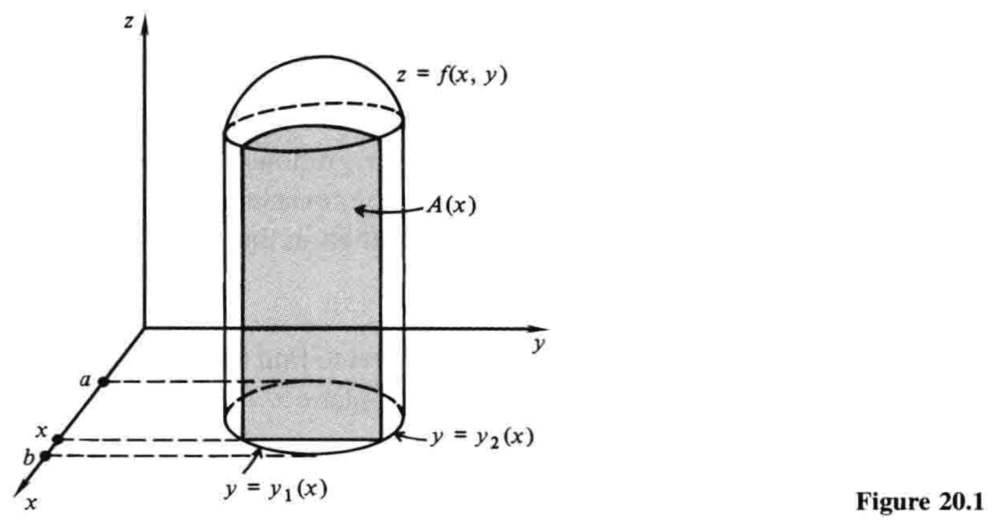
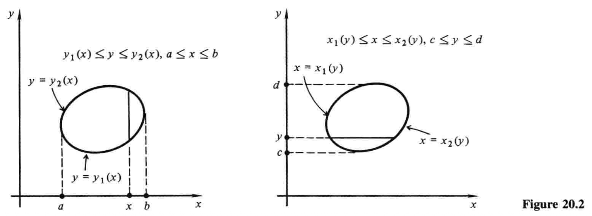
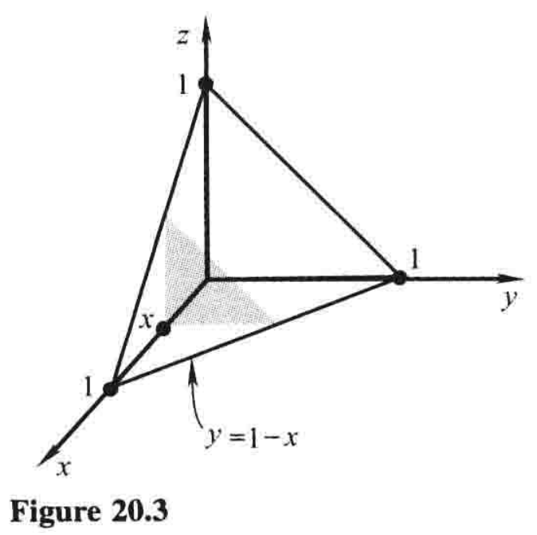
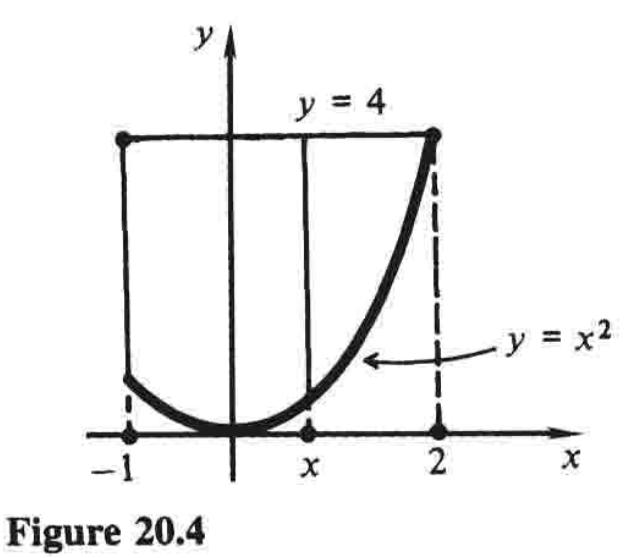
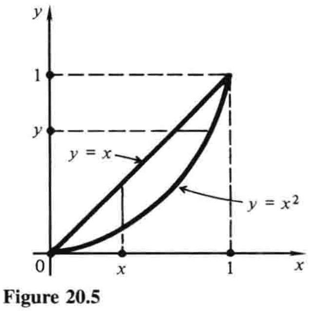

20.1 体积作为累次积分1¶
二元连续函数\(f(x,y)\)可以在平面区域\(R\)上被积分，正如一元连续函数可以在区间上被积分. 结果是一个数，称为\(f(x,y)\)在\(R\)上的二重积分，记作
或
一个不同但密切相关的概念是累次（或重复2）积分. 我们将在本节中讨论累次积分，并在下一节回到二重积分的主题，解释它们是什么以及它们与累次积分的关系.
在7.3节，我们讨论了求体积的「薄片移动法」. 如果用垂直于\(x\)轴且与原点距离为\(x\)的平面来切割几何体，截面的面积为\(A(x)\)，那么式子
给出了平面\(x=a\)和\(x=b\)之间几何体的体积. 这个式子本质上基于这样的看法：
是几何体中厚度为\(dx\)的一个小薄片的体积. 于是，随着薄片扫过整个几何体，换言之，\(x\)从\(a\)增长到\(b\)，总体积\((1)\)就可以通过加总（或积分）这些体积元素来求出.
然而，如果截面本身的边界是弯曲的——很多情况下都会发生——那么确定\(A(x)\)则同样需要积分. 例如，图20.1所示的截面从\(xy\)平面\(z=0\)向上延伸到曲面\(z=f(x,y)\). 考虑\(x\)是任意的，不过姑且固定在\(a\)和\(b\)之间，我们注意到，这个截面的面积是
其中\(y=y_1(x)\)和\(y=y_2(x)\)是约束左右边界的曲线方程. 为求出总体积\(V\)，我们现在把\((2)\)放入\((1)\)，得到累次积分
学生应当特别注意，在\((3)\)中，我们首先对\(f(x,y)\)关于\(y\)积分，保持\(x\)不变. 积分限取决于这个固定但任意的\(x\)值，因此，内层积分的结果值也取决于\(x\)值. 这个内层积分正是\((2)\)给出的函数\(A(x)\)，然后我们从\(a\)到\(b\)对\(x\)进行积分，以获得累次积分\((3)\). 总结一下：我们从一个恒正的二元函数\(f(x,y)\)开始；首先「积出\(y\)」，得到只含\(x\)的函数3；随后「积出\(x\)」，得到一个数——几何体的体积.

另一方面，有些情况下，用垂直于\(y\)轴的平面切割几何体，用别的顺序构造累次积分，可能更为方便. 先积分\(x\)再积分\(y\)，
这两种可能的积分顺序如图20.2所示，其展示了几何体的底面，其中左边是\((3)\)，右边是\((4)\). 累次积分\((3)\)和\((4)\)通常写成不带括号的形式，如
当然，为了更加清晰，只要我们愿意，我们也始终可以保留括号. 积分进行的顺序（先对\(y\)再对\(x\)，或者相反）取决于累次积分中\(dx\)和\(dy\)书写的顺序：我们永远都是先内后外.

例1 利用累次积分，求由坐标平面以及平面\(x+y+z=1\)围成的四面体的体积.
解 平面\(x=常数\)内的截面就是图20.3所示的三角形，其底边由\(y=0\)延伸至\(y=1-x\). 其面积为
现在我们将其从\(x=0\)到\(x=1\)积分，从而求所需的体积：
这个结果的正确性可以利用初等几何来验证，事实上，任何四面体的体积都是三分之一的底面积乘以高.

例2 求累次积分
在\(xy\)平面内的积分区域.
解 内层积分中，当\(x\)固定在\(-1\)和\(2\)之间，\(y\)在曲线\(y=x^2\)到直线\(y=4\)之间变化（如图20.4）. 第二次积分中，\(x\)从\(-1\)增长到\(2\). 积分区域如图所示，被曲线\(y=x^2\)和直线\(y=4\)、\(x=-1\)所围. 学生应特别注意我们是怎样通过分析积分限来判断积分区域的.

例3 累次积分
在\(xy\)平面的一个特定区域上进行. 写出一个等价的积分，其积分顺序相反；并计算两个积分.
解 我们注意到所给积分在图20.5所示区域内进行，位于曲线\(y=x^2\)和\(y=x\)之间，其中\(0 \le x \le 1\). 当积分顺序反转，\(y\)首先在\(y=0\)和\(y=1\)中保持固定，而\(x\)从\(x=y\)增长到\(x=y^{1/2}\). 因此所求积分为
所给积分\((5)\)也有相同值，
因为两个累次积分都给出特定几何体的体积，这个体积无论怎样算出，必然相同. 在这类计算问题中，我们当然可以自由使用任何所需的来自我们过往经验的积分方法——三角换元法、分部积分法等等.
